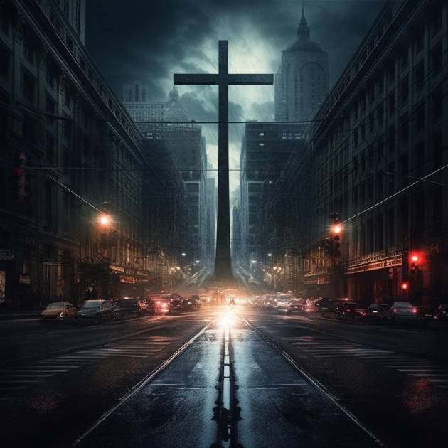

Sobre Este Site
Este site foi criado como um projeto para demonstrar habilidades em HTML e CSS, incluindo acessibilidade, uso de flexbox, grid e estilização via box model.
Na escuridão do estômago vazio e da fome de vitória, um grito mudo ecoa entre costelas e pulmões feridos. O sal do suor cega os olhos, as mãos apertam o vazio como se fossem raízes. Quanta rocha já golpeaste com punhos nus, antes que uma flor brotasse no deserto do medo? Agora o sangue pulsa mais firme, o passado não tem garras suficientes para retê-lo. É no silêncio após a dor, no suspiro após o grito, que a alma se ergue, valente, e afirma: “Ainda estou aqui.”